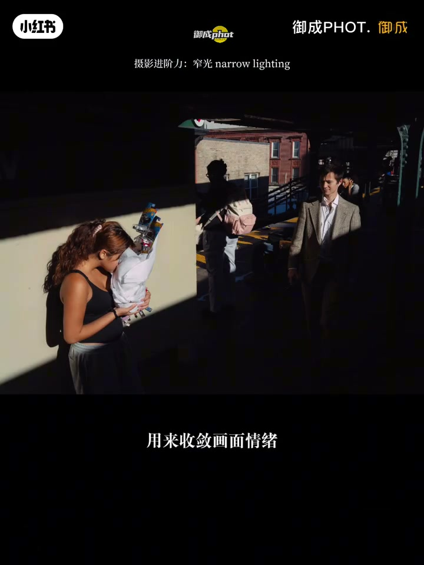
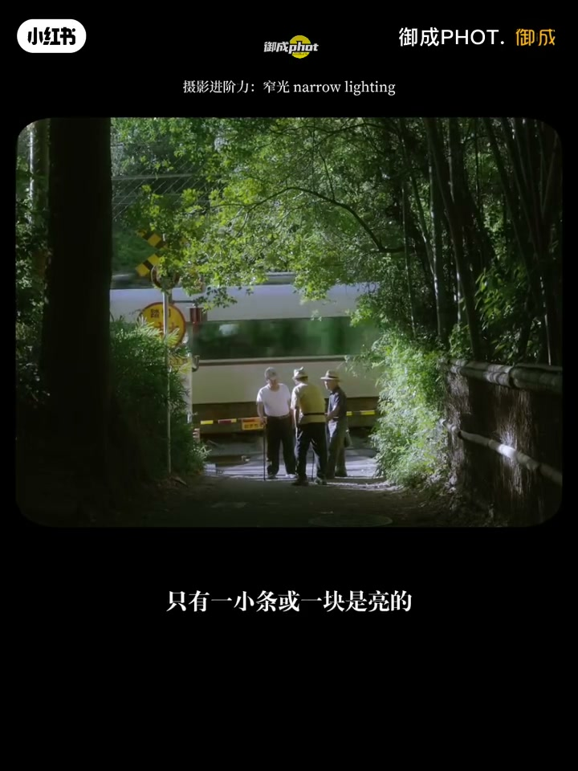
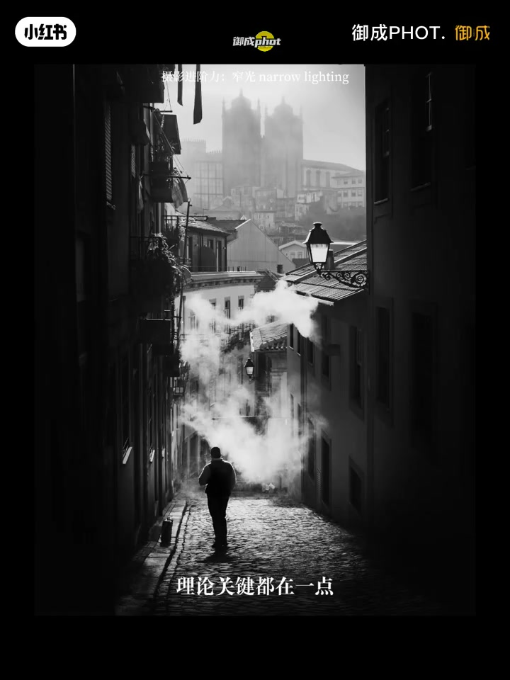
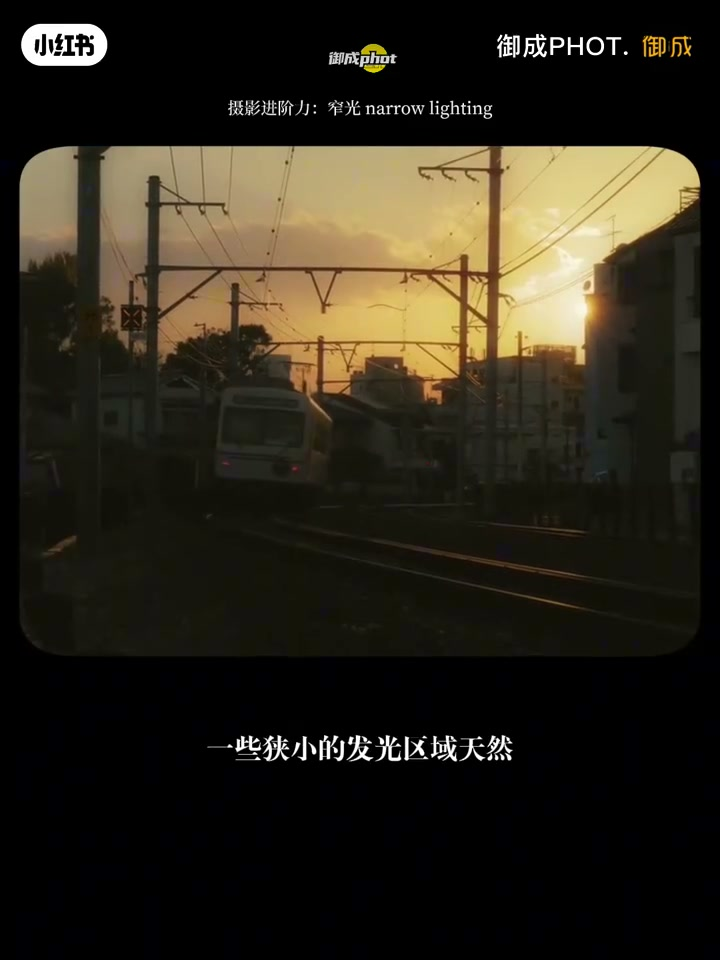
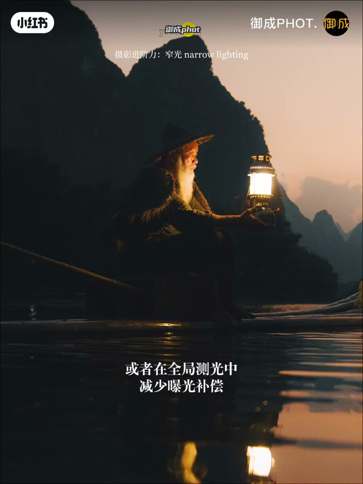
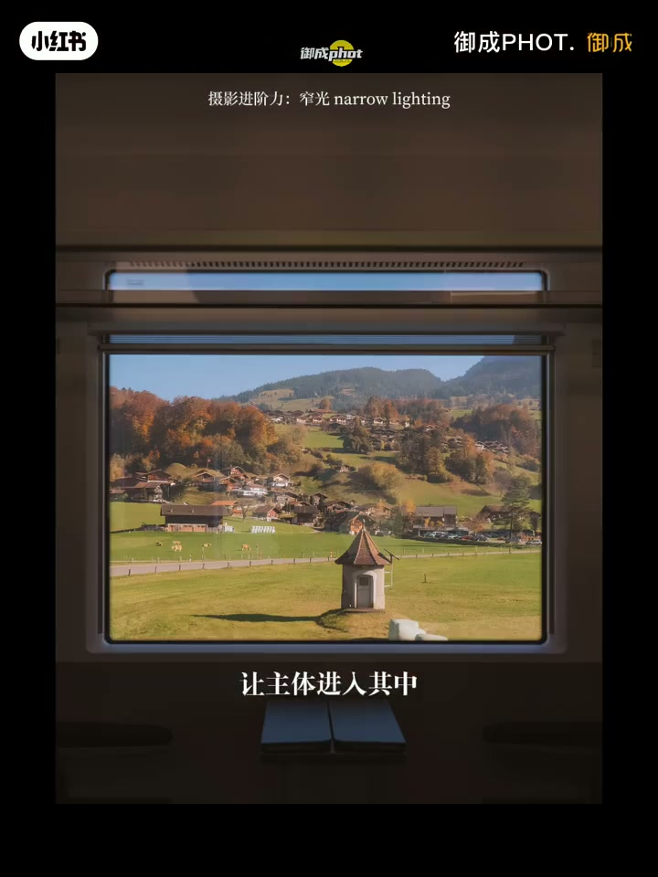

内容要点
御成PHOT. 用一组高对比样片讲解进阶用光「窄光」：不是把一切打亮，而是让受光面很窄、暗部面积很大，亮部成为视线焦点并收敛情绪。前两分钟几乎全靠例图与字幕；片尾约 20 秒口播补上测光与场景动作口诀——全局测光可减曝光补偿、以高光不过曝为准；风光等云等光等山脊，扫街找光等人抓瞬间。
知识结构
窄光＝画面里只有一小条/一块亮；用来收敛情绪、突出重点（片头点题「十年顺光无人知」）。
暗部包围亮部做减法；建筑缝隙、门洞、窗、巷口是入口；扫街可先定光区再等人物走进亮带。
减曝光补偿保高光；让主体进入局部亮区；风光「等云等光等山脊」，扫街「找光等人抓瞬间」。
窄光的可执行公式：先找/等一块局部亮区 → 让主体进入 → 用大面积暗部简化 → 必要时压曝光保住高光，从而制造舞台感与戏剧性。
00:00–00:45窄光是什么：受光面窄、暗部收敛情绪
开场字幕打出「摄影进阶力：窄光 narrow lighting」。笔记文案写得很直白：窄光被用来收敛画面情绪、突出重点；核心是受光面窄、暗部面积大，亮部吸引视线。Whisper 在片头只抓到一句摄影俗语「都说十年顺光无人知」——点出顺光容易平、少人留意，而窄光/戏剧光才是进阶话题。
随后一连串样片都在重复同一视觉事实：不是整幅均匀受光，而是只有一小条或一块是亮的。街巷里人物落在斜切的阳光带中，竹林小径三人站在窄光柱里——暗部像幕布，把情绪收束到亮区。


00:45–02:00暗部做减法：找缝隙亮区、等人入光
中段字幕把操作拆开：亮部成为「视觉舞台核心」；「暗部包围亮部」等于暗部做减法；光比制造戏剧性；明暗分界线本身可当构图线索。找光入口被点名——建筑的缝隙、门洞、窗户、巷口——这些地方天然容易形成局部亮区。
扫街示范更具体：字幕写「第一找光区等人物」——先定一块会被照亮的舞台，再等行人走进去；人物进入后往往是「局部照亮、周围暗」。本段几乎没有可用口播，叙事依据是画面字幕与站位关系。


02:00–02:22测光保高光 + 风光等光 / 扫街抓瞬间
片尾口播终于接上：在全局测光中减少曝光补偿，以高光不过曝为准——对应提灯渔夫人像这类「亮部极小、暗部极大」的场景，优先保住灯火/高光层次。
风光或扫街里用窄光，作者总结为：寻找或等待一块局部亮区，让主体进入其中，用大面积暗部简化画面，突出焦点、制造戏剧性。落地口诀分流——风光「等云等光等山脊」；扫街「找光等人抓瞬间」。结尾玩笑「学废了吗」收束教学。


详细文字转录
以下内容按 Whisper 原始分段呈现并转写为简体中文；约 00:02–02:00 几乎无口播，讲解主要在画面字幕。时间戳保留识别结果。
-
都说十年顺光无人知
-
或者在全局测光中减少曝光补偿
-
以高光不过曝为准
-
那在风光或扫街摄影中利用窄光
-
就是寻找或者等待一块局部的亮区
-
让主体进入其中
-
用大面积的暗部简化画面
-
突出焦点制造戏剧性
-
风光拍摄时你要等云等光等山脊
-
扫街拍摄时则要找光等人抓瞬间
-
怎么样 小伙伴们你们学废了吗